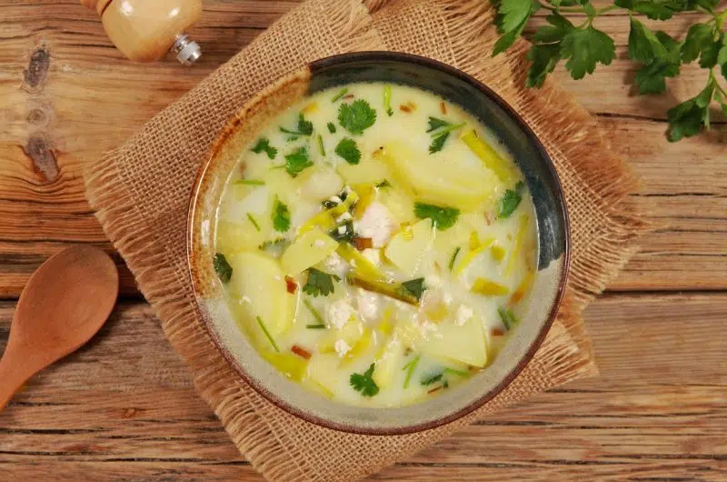

Pisca Andina

Description
Pisca Andina is a traditional Venezuelan soup, particularly popular in the
Andean region. It's a hearty, comforting breakfast soup, often made with
milk, potatoes, eggs, cheese, and cilantro. Some versions also include
chicken broth, onions, garlic, and leeks.
Ingredients
- 2 ½ cups water or chicken broth.
- 4 cups milk.
- 4 eggs (1 per person).
- 2 to 3 potatoes, large, peeled and sliced or cubed.
- ½ tsp white vinegar.
- ½ onion, thinly sliced.
- 2 cloves garlic, minced
- 1 tbsp oil, olive or vegetable.
- 3 tbsp butter.
- 2 to 3 sprigs cilantro, chopped, divided.
- 2 to 3 scallions, top white and pale green section diced.
-
1 leek, 1 to 2 outer layers washed, rolled tightly, thinly sliced.
- 1 to 2 tsp salt, or to taste.
- ½ cup smoked cheese or queso fresco, cubed or shredded.
- ¼ tsp black pepper, or to taste.
Steps
- Peel and thinly slice the potatoes.
-
In a large bowl filled with water, soak the potato pieces. Add the
vinegar to prevent oxidation.
-
In a heavy pot on medium heat, melt the butter. Add about 1 Tbsp of
oil and stir together.
-
Add the thinly sliced onions. Stir for about 3 minutes until onions
start to get translucent.
-
Add the minced garlic and stir. Wait until you can smell the garlic to
add the rest of your ingredients. Be careful not to burn the garlic,
as it will affect the taste of the soup.
-
Stir in about 1/2 of the cilantro. Save the rest for the garnish.
- Add the water or chicken broth.
-
Add the potatoes. If the potatoes are not fully submerged, add a bit
more water or chicken broth, to cover.
- Add the leek, scallions and salt. Stir the mixture.
-
Cover the pot, and lower the heat. Simmer for about 15 minutes, until
the potatoes are cooked.
- Add the milk and let it warm.
-
Give the soup a good stir, and add 1 cracked egg to the center of the
pot. Be careful not to disturb or break the yolk. You want the egg to
remain whole and look similar to a poached egg when the soup is ready
to serve.
-
Add the rest of the eggs in different areas of the soup pot, being
careful not to stir or break them.
-
Add the cheese and salt, to taste. Stir very lightly, barely breaking
the surface so as to not disturb the eggs.
- Cover the pot and let it simmer for 5 last minutes.
-
Check to see if the eggs are cooked. If so, remove the pot from the
heat and serve everyone a bowl of soup, garnished with cilantro.
Home